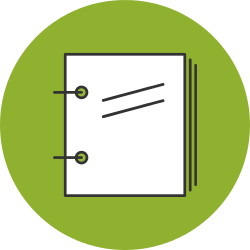

Components
There are a number of key components that make up open contracting data. In particular, releases and records are the backbone of the Open Contracting Data Standard. But documents play a vital role in the world of contracting and while releases and records provide a machine-readable summary of a contracting process, they should always be supported by links to well-managed documents.
Documents
 A contracting process generates many documents - from needs assessment and market studies, to tender notices and calls for proposals, and the actual text of contracts. Wherever there is no legal or policy restriction on doing so, these should be placed online in a stable location, and linked to from within the relevant OCDS release and records.
A contracting process generates many documents - from needs assessment and market studies, to tender notices and calls for proposals, and the actual text of contracts. Wherever there is no legal or policy restriction on doing so, these should be placed online in a stable location, and linked to from within the relevant OCDS release and records.
See the document section of schema reference for more details of how to include documents in your data releases, and the documentType code list for a list of common documents that the OCDS recommends are included, and for details of where documents may be attached within the OCDS structure.
Releases
To encourage the greatest possible openness of public contracting information, the Open Contracting Data Standard is designed to support real-time publication of information. At each stage of the contracting process, or at each point when changes, or amendments, are made to data about the contracting process, the standard allows publishers to provide a release.
Releases are cumulative. Over a contracting process releases may be provided to describe a tender, announce contract awards, detail a finalised contract, and provide updates on implementation. Once published, a release must not be changed. Updated information should be shared through a new release.
Releases may originate from a single system, or may be published in a distributed way by different systems, but releases relating to the same contracting process can be compiled by use of the same Open Contracting ID (OCID).
You can think of releases as entries into a ledger: each new entry adds information, and may repeat previous information that remains true. The record brings together a snapshot of the latest state of all the information.
In a complete OCDS implementation, each release would be published at its own URL, and kept online permanently. This may be difficult for some publishers to implement over the short term.
In these cases, where publishers are providing a single URI for fetching information on a given contracting process, the releaseID and releaseDate must be modified whenever updated data is published. A suggested pattern is to append an incrementing number to the end of the OCID in order to generate a unique releaseID for every change. For example:
- ocds-a2ef3d01-1594121/1
- ocds-a2ef3d01-1594121/2
- ocds-a2ef3d01-1594121/3
Records
A contracting record provides a snapshot of the contracting process at a given point in time, bringing together all the releases into one place. It is updated as new information becomes available through releases.
A record contains three key elements: a list of all the releases that relate to that contracting process (required) a compiledRelease which is a release updated with the most up-to-date value for every field a versionedRelease which contains a history of all the changes for every field
At a minimum, this may be a list of pointers to web-accessible releases in order to allow third-parties to assemble and verify a record of the whole contracting process.
The OCDS Schema defines a set of "merge strategies" that work with the jsonmerge library to enable the compiled and versioned releases to be made from just the raw release data. Put another way, publishers do not need to maintain or do any versioning themselves, they can simply publish all the releases that belong to a contracting process.
Worked example
A publisher provides a tender release on 1st January, with a planned contract value of $1000.
On 31st January, the publisher provides an amended tender release updating the planned contract value to $1500.
After assessing bids, it is decided to award the contract in two lots.
On 1st March, the publisher provides an award release, announcing Company A have been awarded a contract for $750.
On 3rd March, the publisher provides an separate award release, announcing that company B have been awarded a contract for $750
These independent releases each provide real-time information about what is happening in the contracting process. The record will combine them together. Using the same schema and structure as the releases, the main body of the record will contain a tender with contract value of $1500, and details of both awards.
If the record is complete with versioning information, then the versioning section will reveal that the planned contract value changed from $1000 to $1500 on 31st January.
Updates and amendments
When new information becomes available, it should be contained in a new release, and the contracting record should be updated to reflect this.
The term amendment has a specific legal significance in many jurisdictions. The release.tag provides a way to indicate when a release is an amendment, and the schema includes space to provide details of changes, and justification for the amendment that is being made.
When records are created by merging together releases then a version history that can be used to track changes to fields is created in the record, allowing users to look back and see the changes that have occured over the lifetime of a contracting process.
Notices
Good open contracting practice involves the widespread publication of key notices about different stages of the contracting process. Publishers should include details in their OCDS files of where tender, awards and contract notices were made available, both online and offline.
Users want to be able to know when notices were published, where they were published, and what they contained.
A notice can be attached to a tender, award or contract within OCDS using the documents property, and a documentType value of ‘notice’. If the notice is accessible online, then the URL to the notice can be given. If the notice was published in a printed publication, or posted in some other public venue, the document description field can be used to explain this, and the format can be set to ‘offline/print’. The publicationDate of the document should be the date the notice was made available.
Packages
For the convenience of users, a collection of releases, or a collection of records, can be combined together in a release or record package.
View the schema reference for more details.